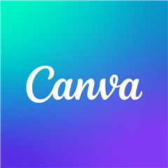

폰 화면 틀
폰 모양 화면(Canva·검색 앱 등)을 그릴 때 쓰는 틀·상단·하단 모양을 모아둔 가이드. 틀은 공용 .phone-frame(left·top·width·height는 페이지 CSS에서),
얇게 하려면 .phone-frame.is-thin을 더 붙임. 아래 폰은 실제 크기 그대로 보여주는 데모이며, 상태바·하단은 페이지마다 따로 그림(공용 아님).
폰 화면 — 틀 + 상단 + 하단 한 세트
각 폰은 틀 · 카메라 홀 · 상단 · 하단을 모두 붙인 완성 모양. 카메라 홀은 모든 폰에 기본으로 들어가며 .phone-frame.has-cam(공용)으로 붙임. 나머지 클래스도 공용 부품.
13:1364
⌂··· ♛ ⇧
추천요소텍스트갤러리브랜드
13:1364
13:1364
앱 첫 화면 — 앱 아이콘만 가운데
활동 시작 때 폰 가운데에 앱 아이콘 하나만 놓고 손가락으로 누르게 하는 화면. gwa/02:10 기준으로 아이콘 크기(110px · 모서리 28px)와 아래 앱 이름(20px · 굵게)을 모두 통일했고, 틀은 모두 .phone-frame.is-thin으로 통일, 배경은 각 페이지 그대로. 이름 글자색은 어두운 배경에서는 흰색(+그림자), 밝은 배경에서는 검정. 모든 폰에 상단 정보(.phone-status)와 하단 버튼 3개(.phone-nav)를 붙임. 손가락은 공용 pointFingerAt처럼 아이콘 오른쪽 아래.
13:1364

Canva
13:1364
ChatGPT
13:1364
13:1364
네이버 지도
13:1364
SmartThings
13:1364
Assistant
| 화면 | 틀 | 배경 | 아이콘(통일 전 → 후) | 이름표(통일 전 → 후) |
|---|---|---|---|---|
| sa/02:10 | 얇음 | 보라 그라데이션 | 110px · 28px → 같음 | 없음 → 20px 흰색 |
| gwa/02:10 (기준) | 얇음 | 보라 그라데이션 | 110px · 28px | 20px 흰색 |
| sa/06:09 | 얇음 | 흰색 | 138px → 110px · 28px | 없음 → 20px 검정 |
| sa/08:10 | 얇음 | 흰색 → 연한 파랑 | 핀만 155px → 흰 정사각 110px · 28px 안에 핀 | 없음 → 20px 검정 |
| gwa/07:09 | 굵음 → 얇음 | 연한 파랑 | 150px · 62px → 110px · 28px | 22px 검정 → 20px 검정 |
| gwa/05:08 | 굵음 → 얇음 | 파란 그라데이션 | 130px · 34px → 110px · 28px | 흰색 → 20px 흰색 |
| 화면 | 틀 | 크기(틀 전체) | 카메라 홀(has-cam 적용 전 현황) |
|---|---|---|---|
| sa/02:08·10 · sa/03:07·09 | 얇음(.cv) | 504×895 | 없음 |
| sa/06:09 | 얇음 | 468×895 | 없음 |
| sa/11:09 | 얇음 .phone-frame.is-thin | 422×895 (화면 비율 540:1170) | 없음 |
| sa/07:07 | 굵음 | 455×905 | 없음 |
| sa/08:08 | 굵음 | 434×900 | 없음 |
| gwa/07:09 | 굵음 | 500×910 | 있음 |